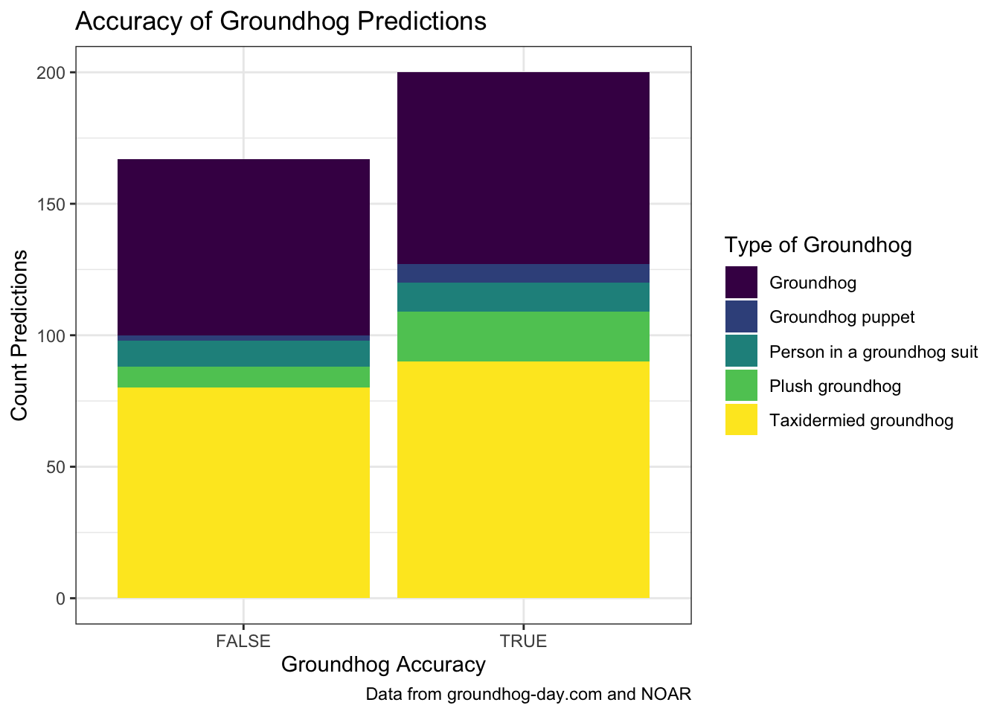
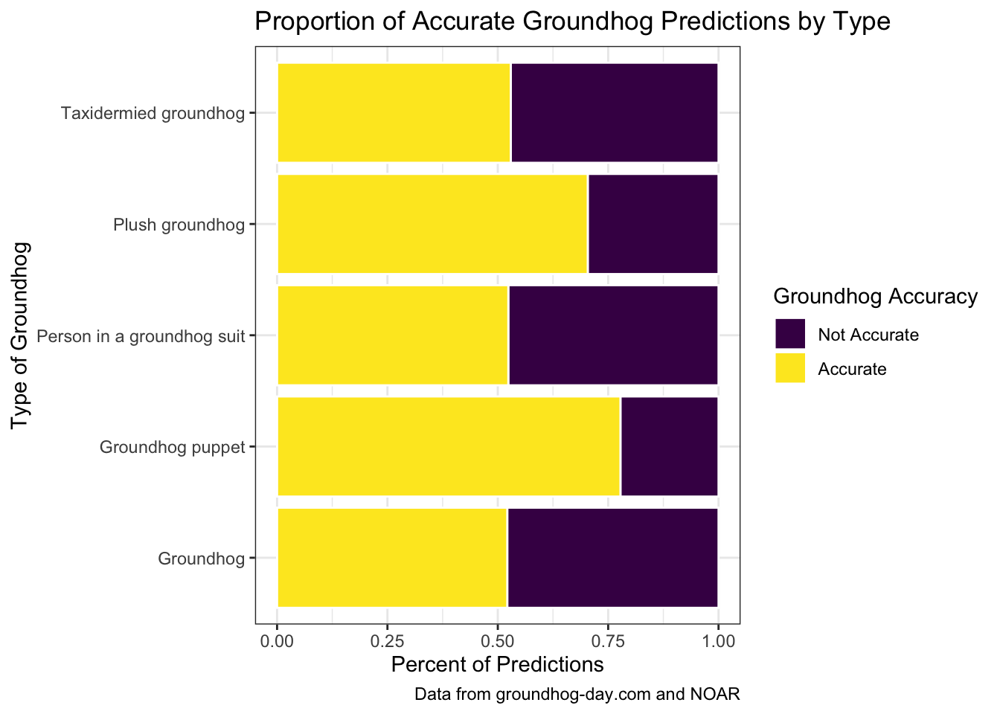
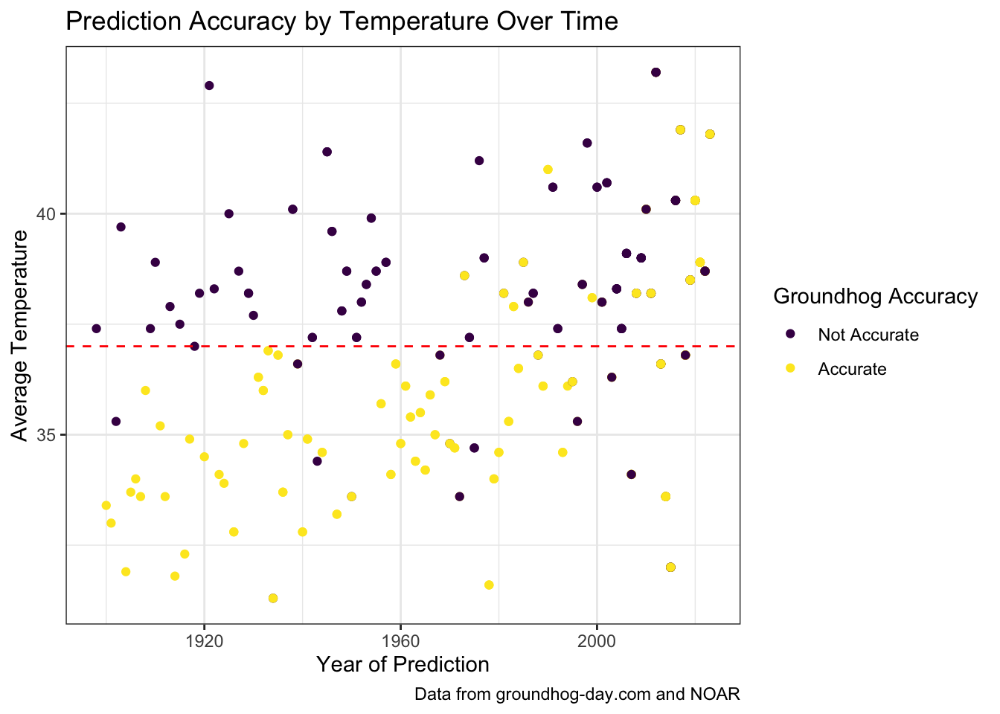

The Truth Behind Groundhog Accuracy: A Data-Driven Study
1 Report
1.1 Background
Groundhog Day is a tradition where a groundhog predicts the arrival of spring by observing its shadow, celebrated annually on February 2nd with excitement and cultural significance.

1.1.1 What the Groundhog Prediction means?
Shadow Means Winter Continues If the groundhog sees its shadow, winter lasts six more weeks.
No Shadow Means an Early Spring If no shadow is seen, spring arrives early.
1.2 Introduction
Our analysis focuses on the longstanding weather prediction using groundhogs. We are curious to explore how effective groundhogs actually are in making predictions of weather. Groundhog Day, which is the event our research is based on, is a tradition where a groundhog predicts the arrival of spring by observing its shadow, celebrated annually with excitement and cultural significance. We would like to build a a better understanding what are the key factors that play a part in predictions and accuracy, using data.
1.3 Data collection
We source our data from Tidy Tuesday, which provides two csv files. The first csv file provides information for groundhog characteristics including their name, longitude, latitude, type of groundhog. The second csv is a prediction data set that has information on the predictions made by groundhogs. The corresponding variable between the two data sets is the id variable that identifies each groundhog and can allow for us to merge the two data sets. It is important to note that the authors attempted to provide weather data to accompany this dataset, but have been unsuccessful so far. We explore additional weather data ourselves to supplement the Tidy Tuesday data. The weather data is sourced from the National Centers for Environmental Information. With the weather data we will be able to determine the accuracy of the predictions.
1.4 Data preparation
The Tidy Tuesday data came with two separate data sets: the groundhog data which gave biographical information for groundhogs and the prediction data set which provided a record of annual weather predictions by each groundhog. We merge the groundhog data set to the prediction data set using the id variable.
We noted that the different regions have different weather patterns hence predictions which added a lot of noise in the data. To deal with this we decided to filter our data to one specific state, mainly Pennsylvania. The main reason for choosing this state is because it had the most observations, which would provide us more details in our analysis.
Once we had merged and filtered the data set, the next step was to add the weather data that would be used to compare with groundhog predictions. We sourced the data from the National Center for Environmental Information, which gave us an average temperature for a 3-month period from February to April that we will use to determine an early spring or late winter. We merged by the year variable which presents values of the average temperature for that year in the weather data and is the prediction year for the groundhogs data for the year period from 1998 to 2023. We then produced a final groundhogs prediction data set that incorporates actual weather data for each year.
1.5 Findings
The next stage is analyzing the data and we make several visualizations to explore our research question. First we wanted to learn about how accurate groundhogs are overall. Our first visualization explores the accuracy of groundhog predictions colored type of groundhog. This is a stacked bar graph with the x axis being groundhog accuracy (true or false) which determines if the groundhog was right or wrong in its predictions, and the y axis being the count of predictions. The bar graph indicates that overall groundhogs are slightly more accurate than not, with more true counts than false counts.
The accuracy of each type of groundhog is quite different based on groundhog type. The stacked bar graph shows the proportion of accurate predictions by groundhog types. The y axis is the groundhog type and the y axis is the percent of predictions that are true and those that are false, coded by color. Groundhog puppets are the most accurate (over 75%), while real groundhogs are some of the least (around 50%).

Additionally we wanted to explore how accurate ground hogs were depending on the temperature. We analyze accuracy by temperature overtime using a scatter plot. The x axis is the year of prediction and the y axis is the average temperature. The points are grouped by true or false which essentially measures the accuracy of the groundhog. Additionally we select a line that represents the early spring cut off, defined by the temperature where frost stops forming (37°f). The results show that groundhogs are more accurate at predicting more winter than early spring.

Finally we wanted to explore where the ground hogs we were studying are located. The final visualization is a leaflet map that shows the distribution of the different groundhog types. This is an interactive leaflet map that allows the reader to zoom in and out. We have coded the map to be an html file. The leaflet map shows that the majority of groundhogs are located in Southeast Pennsylvania, however the outliers are more often real Groundhogs.
1.6 Conclusion

Groundhog predictions have an almost 50% chance of being correct and in most cases they are good at predicting winter. Since there are so many different types of groundhogs, real groundhogs are not the only animal type we consider. Through data analysis and data visualization, we found that Groundhogs are generally 50% accurate in their predictions. This varies slightly based on type with groundhog puppets and groundhog plushies being slightly more accurate.These results give a valid value to the holiday that will continue to play a significant role in many communities. In conclusion, although it may be hard to confirm that groundhogs are truly natures meteorologits, they still play a significant role in nature.